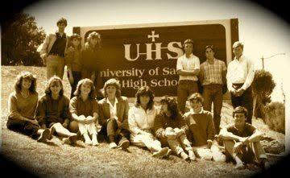

College courses, in high school
DBI students are nominated each year to take college-level business coursework at USD’s Knauss School of Business — while still enrolled at Cathedral Catholic.

Partnership · University of San Diego
This school opened in 1957 as University of San Diego High School — “Uni” — and its teams have been the Dons ever since. Sixty-nine years later, DBI students are back on that campus.

DBI students are nominated each year to take college-level business coursework at USD’s Knauss School of Business — while still enrolled at Cathedral Catholic.
Since the first cohort, every spring venture team has been paired with an MBA mentor from USD alongside its industry mentor — graduate-school rigor applied to a high-school company.
DBI Advisory Board · Fall keynote
Dean, Knauss School of Business · University of San Diego
The dean of USD’s business school doesn’t just endorse DBI — he sits on its advisory board, and he opens the fall term as its keynote speaker. The partnership runs through the classroom, not just the letterhead.
Where to next